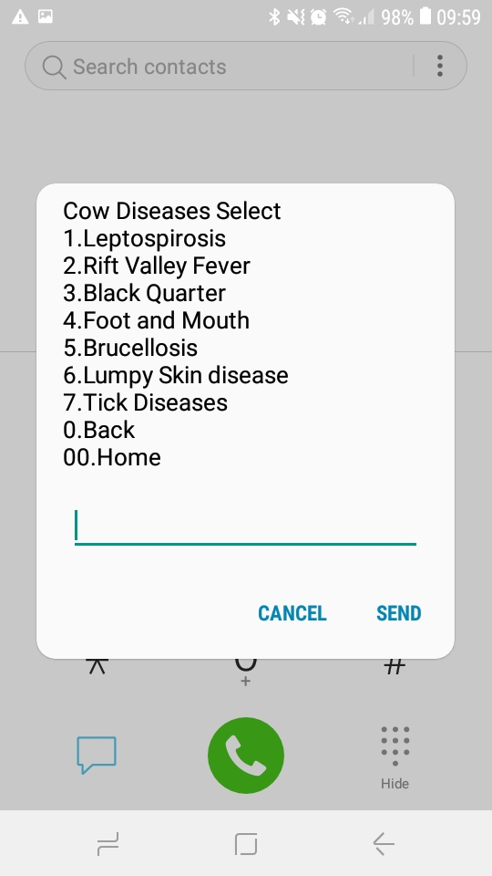
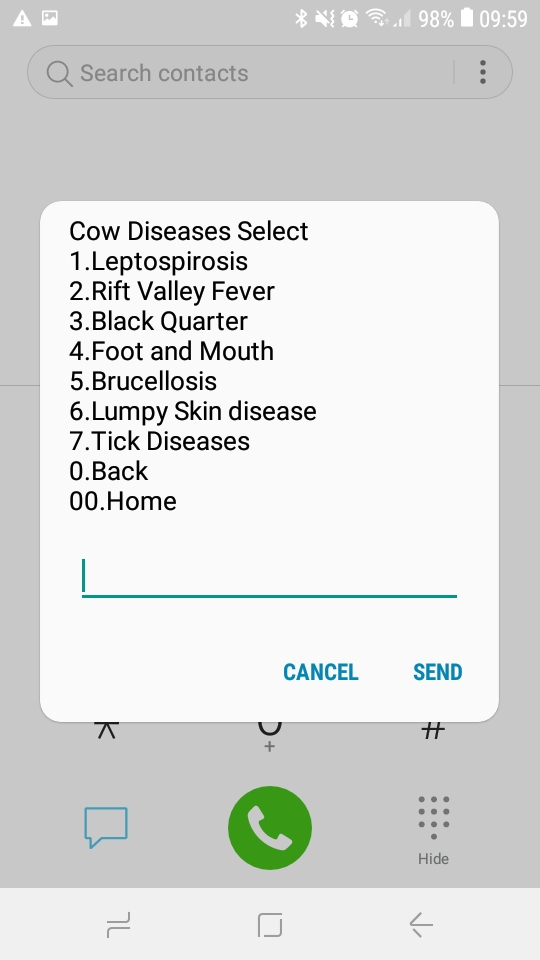

SMS + USSD
- Community USSD service
- Pilot structure
- Integration with 2waySMS
- Engagement strategies
- Admin site
- USSD usage viz
- Crossfilter
- Africastalking USSD number availability
- Jupyter lab SMS stuff
- Works on every phone
- Familiar: *100# and mPesa
 |
USSD |
Example:
iCow — *285#
iCow — *285#
iCow — *285#
 


Concept: Community USSD Line

SMS |
USSD |
| Unstructured | Structured |
| Push + Pull | Pull only |
| Message stays on phone | Leaves no trace |
| User waits for reply | Instant response |
| — | Limited input length |
| Affordances: prompting | Affordances: menu options |
USSD is good for:
- Browsing information:
- What are Ol Pejeta's offerings?
- How can I benefit?
- How do I access the programs?
- Instructions, ag extension
- Structured user input
Surveys, booking services
Pilot 1: Jiko Program
- Information
- How to get one
- How to use
- How to maintain
- Request service
- Accountability?
- Manage supply chain?
Pilot 2: Request Bus Trips
- On USSD, tell us:
- Which community / school
- How many people
- Requested date
- Steven calls you back to confirm
Pilot 3: Bursaries
- How to apply
- Who is community rep
- Important dates
- Get more information
- Combine with SMS
Pilot 4: Cattle Extension
- Order supplies from Ol Pejeta
- Directory of external suppliers
- Nutrition information
- Restricted to Mutara, Tangi-Nyeusi, Ex-Rock
*384*5555111#
(number will change)Demo 2: Admin Site + Dashboard
USSD Pilot Timeline
| This week |
|
| Oct–Dec |
|
|
Jan— Contingent on findings |
|
SMS + USSD
togetherSMS |
USSD |
| Unstructured | Structured |
| Push + Pull | Pull only |
| Message stays on phone | Leaves no trace |
| User waits for reply | Instant response |
| — | Limited input length |
| Affordances: prompting | Affordances: menu options |
SMS + USSD Integration
| For staff |
|
| For communities |
|
Alternative SMS Approaches


Engagement
Experimental setup
Publicity
- SMS broadcasts
- Community meetings
- Saving numbers into phones
- Local radio ads?
- Referral program?
- Posters?
- Stickers?
SMS Cost Sentitivity
No credit on your phone?

Vashistha, A., Cutrell, E., Borriello, G., & Thies, W. (2015). Sangeet Swara: A Community-Moderated Voice Forum in Rural India. Proceedings of the 33rd Annual ACM Conference on Human Factors in Computing Systems - CHI ’15, 417–426. https://doi.org/10.1145/2702123.2702191
Personal Engagement: WelTel Trial

Lester, R. T., Ritvo, P., Mills, E. J., Kariri, A., Karanja, S., Chung, M. H., … Plummer, F. A. (2010). Effects of a mobile phone short message service on antiretroviral treatment adherence in Kenya (WelTel Kenya1): a randomised trial. The Lancet, 376(9755), 1838–1845. https://doi.org/10.1016/S0140-6736(10)61997-6
Personal Engagement
Automated message:
[Name] this is [Nurse] from Mathare clinic. Regular, strong stomach pains are a sign of labor. If you feel strong tightening of your belly, leaking of fluid or any bleeding go to the clinic. Have you had any labor pains? How often do you feel them? Are you worried?”
40 minutes later:
“Hi,am not as such worried,but i have a little fear.i havenever had any labor pains.”
10 minutes later:
“Hi.madam [nurse],kindly will u state for me items thatare needed when i will attend clinic during labor painse.g clothing for the baby,basin,.and what els.......”
Nurse reply:
“Hi [name], you need baby clothes, shawl, leso, basin,spirit, cotton wool. that is mainly it. the rest you caninquire from the nurses when you reach the hospital.”
Perrier, T., Dell, N., DeRenzi, B., Anderson, R., Kinuthia, J., Unger, J., & John-Stewart, G. (2015). Engaging Pregnant Women in Kenya with a Hybrid Computer-Human SMS Communication System. Proceedings of the 33rd Annual ACM Conference on Human Factors in Computing Systems - CHI ’15, 1429–1438. https://doi.org/10.1145/2702123.2702124

2waySMS Incoming Messages


Questions
- How to we make the most of this pilot?
- What should the USSD number be?
- How to publicize?
- Which interactions need case management?
- How to evaluate?
2waySMS number
0725555111Possible USSD numbers
*384*5555111#*384*555111#
*384*5511#
(other ideas?)
Extra Slides
Affordances


AI with SMS is hard
my headache is ve ly pain and kizuguzugu
My nxt visit will be on 29th may.na nina sweat sana siku hizi xana xana usiku.can u elaborate on this pliz
the 1st thing iwould like 2say hi 2u hpng dat ur fine.my qstn is dat when ivisted clnc last mnth itryd 2expose my complication 2the dctr dat the lab told 2hav some medicine coz of infctn bt they gav out 2 me some amoxil capsols 4me 2use 2x3 pa day bt whn iused them 4the 1st 4day iwas flng stomach strng pain den ijust chsn my self 2surender tkng thm did iwrng or icld cntnu usng them bcz its how they use 2cure
yesiamhavingheartburninaweekitocurstwice
Perrier, T., Dell, N., DeRenzi, B., Anderson, R., Kinuthia, J., Unger, J., & John-Stewart, G. (2015). Engaging Pregnant Women in Kenya with a Hybrid Computer-Human SMS Communication System. Proceedings of the 33rd Annual ACM Conference on Human Factors in Computing Systems - CHI ’15, 1429–1438. https://doi.org/10.1145/2702123.2702124